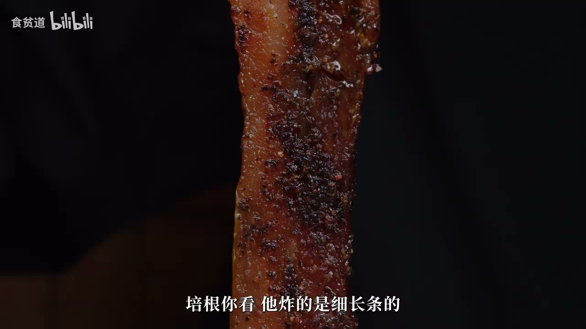
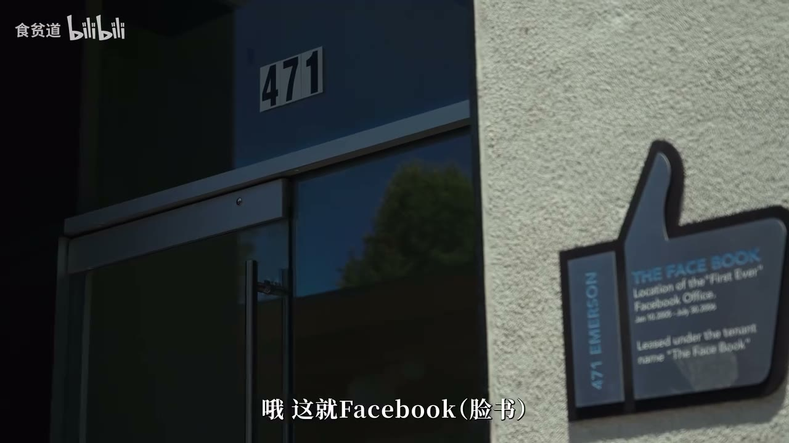
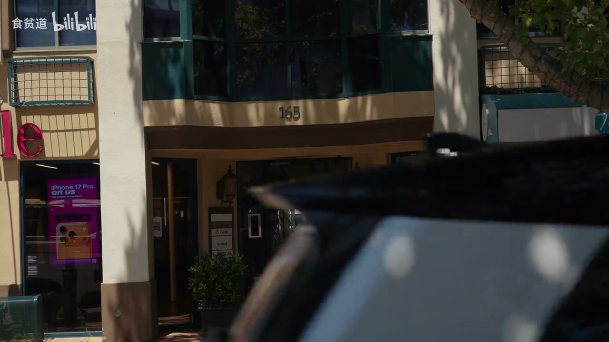
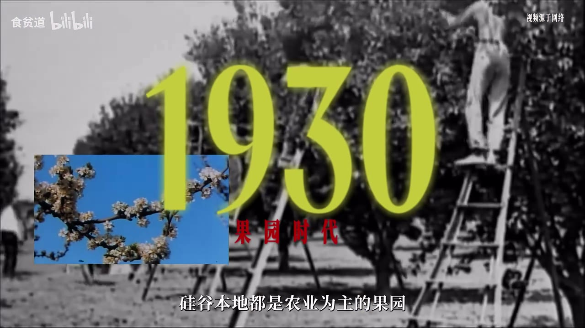
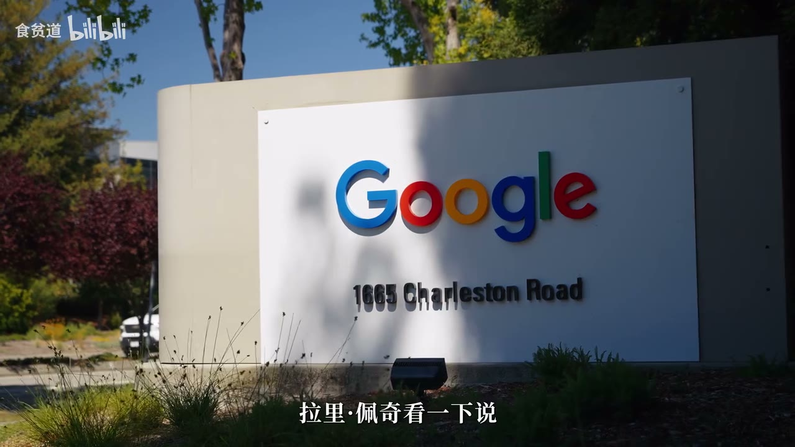
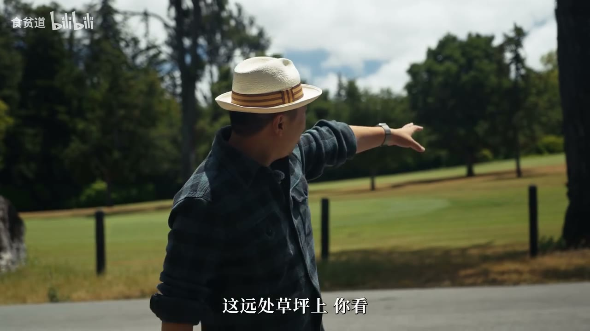

内容要点
探访式短片：从传奇早餐店 Buck's（ASR 作 Bugs）的特斯拉创业桌与「马斯克最爱培根」，到 Facebook/PayPal 早期办公室与斯坦福果园史；采访投资人对照 AI 热潮为何比移动互联网更快（Utility 无需网络效应冷启动），把 AGI 类比为蒸汽机/电力级通用生产力，并以图片搜索上线故事说明技术理想主义；收束于邀请制 AGA House 周六社交。开场电视英语音轨 ASR 嘈杂，正文以探访与访谈为准。
知识结构
传奇餐厅；特斯拉创业桌；边吃边抛「矽谷 AI 到底怎样」的问题。
Apple I 文物；FB/PayPal 办公室；斯坦福租地与军工订单塑形。
速度因 Utility；AGI≈蒸汽/电力；工程师理想主义；AGA House。
这集「八卦」的信息密度在现场感：地标证明叙事、早餐桌串联创业神话；访谈给出可带走的框架——AI 是基础设施式扩散，热潮像 2000 年估值狂欢也像生产力革命，关键在速度与通用性。
00:00-04:40Buck's：吃着传说问 AI
开场环境音嘈杂（电视英语音轨 ASR 混乱），很快切到美食探访：Buck's 面积不大但桌桌有故事——主持人坐的位置被指为特斯拉创业早餐桌（当时还没有马斯克入局的版本叙事）。
点了号称马斯克最爱的培根配餐，抛出本集问题：这边 AI 发展到什么程度、从业者什么状态。吃完还半开玩笑说要给马斯克发推。

04:40-09:50办公室巡礼与矽谷成因
店内展示 Apple I 等文物，店主口述从 PC 到 1995 网络爆发再到当下对 AI「惊讶又害怕」。外景：Facebook 第一间正式办公室（对面越南粉）、PayPal 所在「最幸运办公室」——租金贵本身是信号（有名风投投了才住得起）。
下行到斯坦福：上世纪 30 年代前本地是果园；校方鼓励学生租地创业催生车库形态；冷战军工订单带动半导体；80 年代养老金入私募叠加 PC/互联网热潮，理想主义与资本狂欢交替至今。



09:50-16:30AI 热潮：更快、更通用、更社交
投资人对照：像 2000 年估值狂奔+高房价高薪；不同在于速度——移动互联网要网络效应（如 Facebook「五个好友」），AI 更像 Utility：自己用上 ChatGPT/DeepSeek 就能受益。大厂竞争反而给普通人机会；不宜只把 AI 比作又一次互联网，更接近蒸汽机/电力级通用生产力（AGI 的 G=General），「涌现」带来跨任务融会。
技术理想主义样本：合伙人周末做图片搜索被谷歌创始人看中上线，工程师命运被改写，激励周围人「下一个为什么不是我」。结尾当地时间 2026-06-27 周六下午进入邀请制 AGA House：上午行业报告不对镜头开放，下午窥探矽谷社交在干什么。


完整转录（425段）
以下文本由 Whisper medium 模型自动转录，可能存在少量识别误差，已尽可能修正。
我上周签订了《拜登的破坏法律》
以及《技术和智慧法律规定》
希望AI公司能够再次集中在最好的
而非只集中在最聪明的
在中国企业开发AI的技术
在我们企业开发AI的技术上
我们必须非常专注
在争取胜负
我跟你讲我有个预感
我觉得有大事要在我面上发生
AI的技术变化得很快
它们的进步速度很快
AI的技术让人们有机会上升
我认为这些技术
不够聪明
我们会失去控制
我认为它不够聪明
现在似乎只是一场比赛
每个人都需要更多的力量
每个人都需要更多的力量
欢迎来到我们疯狂的国家
好
谢谢
我改变了你的火腿
给我们的辣椒火腿
其实Elon Musk
喜欢辣椒火腿
他来这里只是为了辣椒火腿
我改变了你的火腿
给我们的辣椒火腿
其实Elon Musk
喜欢辣椒火腿
这是辣椒火腿
好久啊
咱这充电视频
没有上来就吃东西了
毕竟是个美食家
这是土豆汤嘴
这一集咱们来到的地方
小伙伴们
来了是龟
我们现在在这个餐厅叫啥
叫Bugs
就是矽谷当地一个非常传奇
非常有名的餐厅
这个Bugs这个餐厅啊
看著啊
这面积不大
但里面这每样东西都有说道
整个这个行业
几十年来行业里
很多伟大的公司
著名的公司都是在这
吃著早餐
聊著把这事儿定下来
我现在坐的这张桌子
好像都有说道
我坐的这个桌子
就是当年特斯拉创业的时候
决定干特斯拉的这张桌子
当年特斯拉的创始人
就在这儿一块儿吃著这早餐
完了说咱也干个特斯拉吧
那会儿还没有马斯克呢
马斯克都是后来的
尝一下啊
尝一下这个吧
这个号称是
马斯克在这儿最爱吃的配个
经常让自己都饱不饱
经常让自己都饱不饱
过来给他买
他有可能给他炸点细长条的
老长了比马斯克的脸还长
然后撒了浓浓的黑胡椒
因为我知道先是甜
然后黑胡椒的这个
这个胡椒的那个呛辣感
但是吃也不腻
而且挺爽的
还想找啊
所以说我要爱他马斯克
这儿他们这儿人都爱吃的
煎饼弄到这个糖浆
我这一个星期的糖都够了
其实这次来矽谷啊
我们还是带著非常好奇的问题来了
我们想知道这边的AI到底什么样
这边AI到底发生到什么程度了
现在矽谷的从业者到底是什么状态
其实这是我们这一集要去探讨的那个
吃完这个马斯克最爱的培根
我觉得还是得给马斯克发个推特
告诉他
我真是不爱吃肉
要不是
要不是为了他
我认为网购
是最重要的一件事
发生在这里
因为它让我们都可以轻易上网
而PayPal
他们在这里获得他们的第一笔钱
PayPal
对
Reed Hoffman、Peter Thiel、Max
Levshen、David Sachs都在那里
现在他们都成为宾士了
哇
几年前有人给我们这个
这是给我的
这是一个Apple I
现在有85个都在这里
郑森王
他住在街上的
我们需要一些比较好的艺术品
因为我们店里不够
所以他就说
我应该有东西
他就把这个袋子拿了
他就把这个袋子拿了
然后就把这个给我们
他只给了我们两个
一个是在市场
一个是给我们
这挺有趣的
他当时觉得像餐馆
这龟骨什么样
在1991年
我们有个人电脑
那是最基本的东西
让Silicon Valley成为名誉
但在1995年
网络爆发
然后就开启了
一切都开启了
我们以前是世界上所有人的英雄
用网络
用新的手机
但这就开始
跟我们现今的政治幻想
在过去两三年
现在人们都很惊讶
和害怕AI
Sweet Sweet Music
All Night Long
这周围一个不起耳的小房子
可能就是一个很厉害的棋
对对对
对这个就是看看
这儿
这就是Facebook
这是Facebook第一个办公室
就在这
在之前他是在租的别人的房子
电影里头把烟头给拉下来
在之前是住在别人的房子里面
这是第一个租的办公室在楼上
对面是吃越南粉的
吃的是越南粉
对
在这地方感觉到机会人人平等
对对对
这个就是165
这个网上可以查到
对对对
这就是当年那个PayPal
就Elon Musk
跟那个Peter Tew做的PayPal在这做
之后是谷歌
是谷歌的就是在矽谷的
相当于第一个办公室
被称为是矽谷最幸运的办公室
最幸运的办公室
还有周围很多小的
你大概都是一些很著名的风投公司
所以我们有一个窍门就是说
在这要走一走
看一看
经常看哪家公司
出卖公司在这租的办公室
这说明是很有著名的投资人投的
他才敢在这住
否则的话没必要住那么贵的地
这边办公室一般一天多少钱
当时我们在那个楼上
就这楼上一个月5万美元
5万美金
然后大概是2000尺
就200平米
200平米
5万美元
那是6年以前
确实贵
你看这么几个地就是这样
然后下去之后就是斯坦福大学
所以斯坦福大学其实对矽谷的发展
起到很大的作用
非常大的作用
原来这个城市就是
这就是因为斯坦福大学有了
教授学生住著才有的
上个世纪30年代之前
矽谷本地都是农业为主的果园
当时斯坦福大学为了鼓励学生创业
把土地租给学生
才有了学生车库创业的形态
惠普公司当年也是诞生一次
冷战期间
科技和军备竞赛让矽谷出到重视
美国军方给矽谷这边下了大量订单
带动了最小的半导体行业
矽谷也有此发展
80年代
美国放宽了养老金投资领域限制
加上互联网与个人电脑的热潮
私人投资开始进入矽谷
矽谷也迎来了幼儿爆发
一边是科技改变世界的理想主义
一边是话题与热点造就资本热潮
于是一波又一波的科技热点
与一波又一波的资本狂欢交相互应
矽谷就这样走到了今天
矽谷以来是中国最有名的科技
与经济最有名的科技
以及中国最有名的科技
从这来看
我觉得非常像2000年的时候
可能有很多期待
就因为有一些公司估值涨得特别快
面临著巨大的机会
同时也面临著一个很大的风险
而且大量的钱现在往高科技里头砸
所以是非常像
房价很高
然后工程师的工资更高
所以这两件我就非常想
你要一提这个
您看您作为90年就来美国的
然后投资界非常成功的大佬
您经历过互联网
然后移动互联网
您觉得这几次热潮
前面这几次跟AI这次热潮比
有哪些不同
这次我觉得最重要的就是
它的速度很快
原因就是这么几个方面
一方面就是说移动互联网
它是个网络对吧
它必须是大家都用才有用
这个时间它需要比较慢
对吧
像Facebook内部有个说
就说一个人在Facebook里面
有5个朋友之后
他就不容易走了
就不会再走了
那5个之前就很难做
它有个网络效应
人工智能就正好不一样了
就是说它是一个
我们叫基础设施叫Utility
就说你不用没关系
我自己上网
我用了ChatGBT
用了Deepseq
我就可以用下来了
这个车速度就很快了对吧
第二个就是
本质上讲就是说
大公司之间的竞争
其实给一般的人
带来一个巨大的机会
就移动互联网刚开始的时候
实际上
一般的人用不上
刚开始是教授
后来是企业
现在是普通人
人家那个学生
对吧
都利用那个来
不管是好坏是写作业还是干嘛
大家都在用
所以这个是一个
发展很快的事情
在这个行业一刚开始
诞生的时候
大家会觉得说
是不是又是一次互联网革命
那后来发现
其实这个比方是不恰当的
就是把这个行业缩小了
对
严重缩小了
可能目前去看人
整个人类历史的话
可能比较恰当的
大家好理解的这个比喻
真的是类似于蒸汽机
类似于电力的发能
因为这个智能本身
它就是一种生产力
这一代技术之所以叫
我们一般简写叫AGI
里面的这个G就是General
就是General Artificial Intelligence
这里面的General是通用的意思
传统的上一代
所有的人工智能
它是专用的模型
和专用的算法
就是说以前可能是不同菜系
它有不同菜系的厨师
然后它在这个菜系里边
可能是做得非常精
和非常专的
但是它可能不太了解
其他菜系
意欲美食的特点和思路
现在大模型就是说
有一个像类似于
开了天眼这样的一个
顶级的厨师
所有的菜系
它都可以做到非常顶级
这里边就带来了一个
就是我们所谓的叫涌现
它就可以处理旁通
融会贯通
把一些比如说
其他菜系一些非常好的
想法思路
融合到另一个菜系
然后这种融合
可能是会产生
比如说会
诞生一个更好的一个创新
有了这个成果之后
我们会观察到
很多行业的生产关系
和生产力
发生了非常大的变化
智能水平变到更高以后
你创造了更高的生产力
人大家其实是从
繁琐的重复的工作中解放出来
然后去干更高层级的东西
说归古人
有一种叫技术理想主义
对
他不仅相信
就是你周围很多人
他就是改变了很多的事情
比如像我们基金合伙人
叫朱惠灿博士
当时有个卧虎藏龙
大家喜欢张子怡
后来有个詹尼弗洛佩
穿着一个绿色的衣服
大家都去寻找他们的照片
那是2000年
谷歌刚起步
98年两年
所以世界上没有图片搜索
都是文字搜索
他就做图片搜索的引擎
他是周末做的还是
然后谷歌创始人来这儿
配着看一看说
哎这不错呀
那你就放进去吧
上线
最后就
世界上就有了一个图片搜索
大家突然互联网上有图片搜索
那自己的命运也改变
他就是一个工程师
居然能做到这一步
所以你周围的人经常有那种人
你就会感觉
哎
到底下一个事是什么事
你就开始琢磨这个事
我能不能会像朱惠灿博士那样
我能不能像马克扎克伯一样
他会激励周围的人说
哎
为什么不是我
哈哈
那我得想琢磨下一个事
我能不能像朱惠灿博士那样
我能不能像马克扎克伯一样
他会激励周围的人说
还有一个事
今天是2026年的
6月27号
就当地时间6月27
北京时间应该是已经是6月28了
那是下午一点半
今天是个礼拜六
所以在当地是个休息日
这远处草坪上
你看有人这在盔甘打高尔夫
然后在这边的这个大house里啊
就
硅谷当地一个很有意思的一个活动
他们叫AGA HOUSE
这个活动也是邀请日子
没人邀请
没有人核准你的身份
你是不准来的
这活动上午就开始了
上午呢会有一些分享
这个行业判断
各种的这种报告
但是他们是禁止我们来的
说我们只有下午来的
所以下午呢我们现在进去看看
看看他里面在里边
就这种
硅谷当地的社交活动他们都在干嘛
哎呦这号子挺大
你看